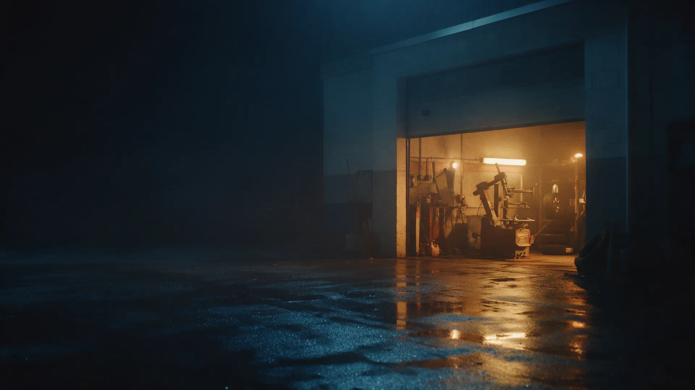
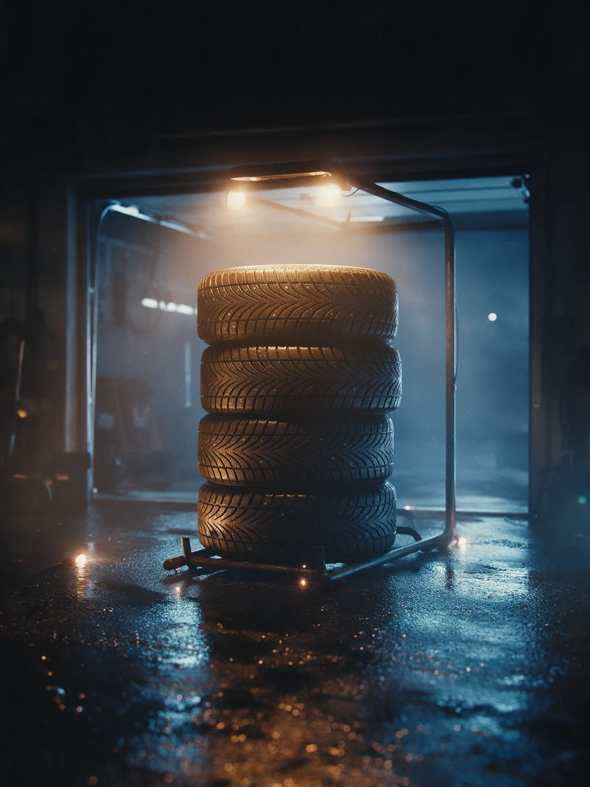
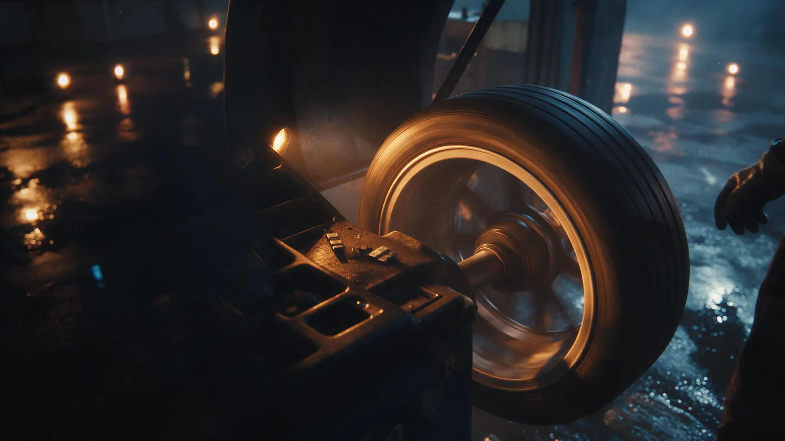
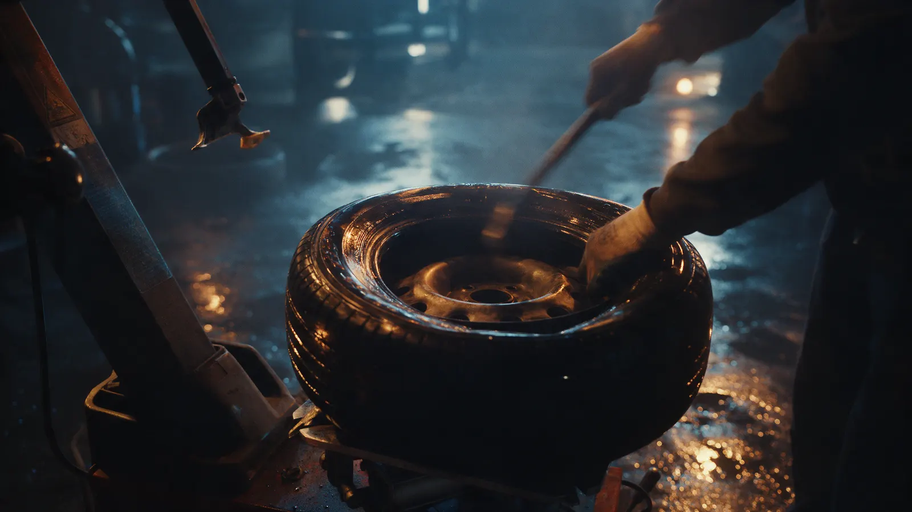

Шиномонтаж · Рязань
Шиномонтаж на Тимакова 1 в Рязани – запись на точное время, без очереди
Автоматизированное оборудование, комната ожидания и хранение шин до следующего сезона.
- Запись на точное время
- Автоматизированный подъём колеса
- Комната ожидания и хранение шин

Что входит в переобувку
Входит
- Снять и поставить четыре колеса
- Балансировка каждого колеса
- Проверка давления
Отдельно, если нужно
- Run-flat и низкий профиль – отдельной строкой
- Хранение шин – отдельная услуга
Цены
Стоимость переобувки зависит от размера колеса, называем при записи.
Переобувка комплекта, легковые
- R13–R15уточнить
- R16уточнить
- R17–R18уточнить
Остальное
- Дошиповка шинот 20 ₽
- Хранение шинуточнить
В цену переобувки входит: снять и поставить колёса, балансировка, проверка давления.
Как проходит
- 01
Записались на удобное время
В WhatsApp, Telegram или по телефону.
- 02
Приехали точно к записи
Без очереди — машина сразу на подъёмник.
- 03
Колесо поднимают автоматизированно
Балансировка на стенде, грузики в цене.
- 04
Ждёте в комнате ожидания
Переобувка занимает 10–15 минут на колесо.



Что обещаем
Запись на точное время
Без живой очереди и ожидания на улице.
Балансировка каждого колеса
На стенде, со всеми грузиками.
Хранение шин между сезонами
Привозите один раз, забираете через сезон.
Отзывы с Яндекс.Карт
«Автоматизирован даже процесс подъема колеса с пола — человек не поднимает собственными руками колесо с пола на стол! Доступные цены, оперативное реагирование на проблему клиента. Очень довольна!»
анна авдюхина · 5 февраля
«Один из лучших в городе! Второй год подряд сезонная смена резины на авто всей семье и никаких нареканий. Есть возможность записаться на определенное время, что очень удобно.»
SSGVV · 29 ноября 2025
«Мне нравится. Сезонную переобувку третий год здесь делаю, там же и храню резину. Оборудовали комнату ожидания.»
Сергей Тарасов · 15 ноября 2025
Отзывы с карточки на Яндекс.Картах, без правок.
Частые вопросы
Можно ли записаться онлайн?
Да, напишите в WhatsApp или Telegram, подберём удобное время.
Что с хранением шин?
Да, принимаем комплект на сезонное хранение — уточните цену при записи.
Сколько по времени?
Обычно 10–15 минут на колесо, если вы записаны на точное время.
Балансировка входит в цену?
Да, балансировка на стенде входит в переобувку.
Запишитесь на удобное время
- Адрес
- район Песочня, улица Тимакова, 1, Рязани
- Часы
- Каждый день 09:00–21:00
- Телефон
- +7 (915) 622-94-49